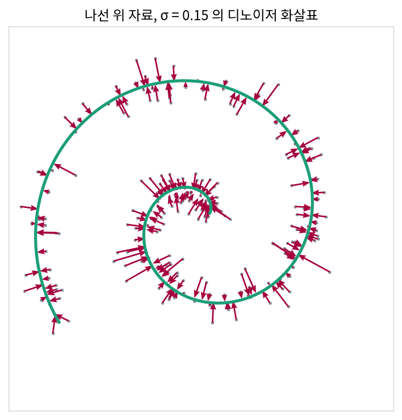
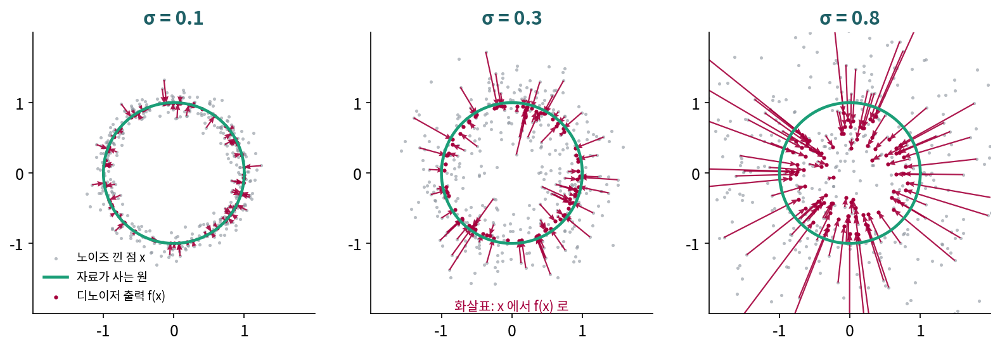
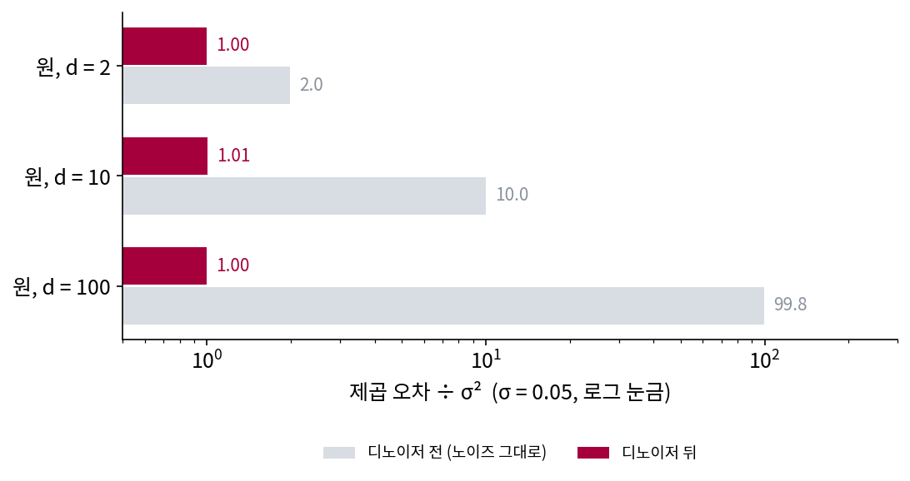

디노이징: 낮은 차원으로 끌어당기기
이 장의 물음
규칙이 있는 자료는 겉보기 칸 수보다 적은 수로 적을 수 있다. 자료가 평평한 면 근처에 모여 있으면 주성분 분석이 그 면의 축을 찾아 주었고, 면 하나로 모자라면 조각마다 다른 축을 고르는 희소 코딩이 있었다. 무엇을 버려도 되는지는 레이트–디스토션과 코딩 레이트가 셈해 주었다. 그런데 이 방법들은 모두 깨끗한 자료를 앞에 두고 축이나 코드를 직접 고르는 일이었다.
요즘 그림을 만드는 디퓨전 모델은 그런 축을 고르지 않는다. 학습에서 하는 일은 하나뿐이다. 깨끗한 그림에 노이즈를 섞고, 노이즈 섞인 그림에서 깨끗한 그림을 맞히게 제곱 오차로 가르친다. 휴대폰 카메라의 야간 사진 노이즈 제거도 노이즈 섞인 사진에서 깨끗한 사진을 맞히도록 배운 신경망이다. 이런 디노이저(노이즈 낀 입력에서 노이즈를 걷어 낸 값을 내는 함수)는 「축」이나 「비트」라는 말을 한 번도 듣지 않는다. 그래도 압축과 관계가 있을까?
- 디노이저는 입력에 섞인 노이즈를 다 지울 수 없다. 무엇을 지우고 무엇을 남길까?
- 노이즈를 잘 지우는 디노이저가 자료가 사는 낮은 차원을 알고 있다면, 그것을 어떻게 숫자로 확인할 수 있을까?
- 자료가 평평한 면 위에 있으면 디노이저와 주성분 분석은 어떤 관계일까?
- 같은 디노이저를 거듭 쓰면 무엇이 남을까? 노이즈의 세기를 바꿔 가며 쓰면 어떻게 될까?
법선 성분: 디노이저는 자료에서 벗어난 방향만 지운다
어두운 곳에서 찍은 휴대폰 사진은 자글자글하다. 화소 수백만 개가 저마다 조금씩 틀린 밝기를 받았기 때문이다. 카메라 앱의 노이즈 제거는 그 사진 한 장만 받는다. 어느 화소에 얼마의 노이즈가 섞였는지 적힌 쪽지는 없다. 노이즈는 모든 화소에 고르게 섞였는데, 디노이저는 그 가운데 무엇을 알아보고 지울 수 있을까? 노이즈가 섞인 방향 가운데 지울 수 있는 방향과 지울 수 없는 방향이 따로 있을까?
역사: 오토인코더가 배운 화살표
노이즈 섞인 입력을 깨끗하게 되살리도록 신경망을 가르치는 방법은 2008년 빈센트(Pascal Vincent)·라로셸(Hugo Larochelle)·벤지오(Yoshua Bengio)·만자골(Pierre-Antoine Manzagol)의 디노이징 오토인코더로 널리 퍼졌다. 그 이야기는 디퓨전 책에 있으므로 여기서는 그 뒤의 물음 하나만 꺼낸다. 되살리기를 잘 배운 오토인코더는 자료에 대해 무엇을 알게 된 것일까?
몬트리올 대학의 알랭(Guillaume Alain)과 벤지오는 2012년에 원고를 공개하고 2014년 『Journal of Machine Learning Research』에 「규제한 오토인코더는 자료를 낸 분포에서 무엇을 배우는가(What Regularized Auto-Encoders Learn from the Data-Generating Distribution)」를 실었다. 그때까지는 되살리기 오차를 「이 입력이 얼마나 자료답지 않은가」를 재는 에너지처럼 읽는 해석이 있었다. 두 사람은 이 해석이 맞지 않는다고 보고, 되살린 값에서 입력을 뺀 화살표 r(x) − x 에 눈을 돌렸다. 노이즈가 작은 디노이징 오토인코더와 가까운 학습 기준에서, 이 화살표는 자료 밀도의 로그를 미분한 방향(스코어)을 가리킨다는 것이 그들의 결과다. 논문의 그림 5는 나선 위에 놓인 2차원 자료에서 배운 화살표를 그렸다. 화살표는 나선 밖에서는 가장 가까운 나선 쪽을 가리키고, 나선 위에서는 거의 0이다.

원 위의 점에 노이즈를 섞으면
나선은 모양이 복잡해 화살표의 크기를 셈하기 어렵다. 계산이 끝까지 되는 가장 간단한 굽은 자료로 바꾸자. 반지름 1인 원 위에 고르게 놓인 점이다. 점 하나는 칸 두 개(가로, 세로)로 적히지만, 원 위에서 움직일 수 있는 방향은 원을 따라 도는 한 방향뿐이다. 겉보기 차원 2, 내재 차원 1이다. 곧은 선 위의 자료는 아래에서 따로 보겠지만, 원은 굽어 있어서 「직선 하나에 사영하면 끝」으로는 풀리지 않는다.
원 위의 점 x₀ 에 세기 σ 의 가우스 노이즈를 섞어 x = x₀ + σε 를 만든다. 노이즈 ε 는 가로와 세로에 똑같은 크기로, 서로 상관없이 섞인다. 노이즈 낀 점 x 만 받아 원래 점 x₀ 를 짐작할 때, 제곱 오차의 평균이 가장 작은 답은 「x 를 낳았을 법한 원래 점들의 평균」, 곧 조건부 평균 E[x₀ ∣ x]다. 이 조건부 평균을 가장 좋은 디노이저 f(x) 라 부르자. 이 평균이 스코어와 한 줄로 이어진다는 것(트위디 공식)은 디퓨전 책의 집이다.
조건부 평균은 원 위의 점을 많이 뽑아 두고 무게를 매긴 평균으로 바로 계산할 수 있다. 원 위의 점 20,000개를 뽑고, 각 점에 「그 점에서 출발해 x 가 나올 그럴듯함」 exp(−|x − x₀|² / 2σ²) 을 무게로 매겨 평균을 낸다. σ = 0.3 이고 노이즈 낀 점이 (1.3, 0.4) 라면 평균은 (0.924, 0.284)다. 원은 모든 방향으로 똑같이 생겼으므로 이 평균을 식(베셀 함수의 비)으로도 적을 수 있는데, 식이 낸 값도 (0.924, 0.284)다. 노이즈 낀 점 2,000개에서 두 계산의 차이는 가장 커도 0.0074였다(sources/denoising-compression/s1_arrows.py).
(1.3, 0.4)에서 (0.924, 0.284)로 가는 화살표는 원점 쪽을 곧게 가리키고, 길이는 0.394다. 디노이저는 점을 원의 지름 방향으로만 옮겼고, 원을 따라 돌리지는 않았다. 도착한 곳의 반지름은 0.966으로 원보다 조금 안쪽이다. (1.3, 0.4)를 낳았을 법한 원래 점들이 원호를 따라 조금 퍼져 있고, 원호 위 점들의 평균은 원호의 안쪽에 오기 때문이다.

이번에는 점 200,000개에서 오차를 두 방향으로 나눠 재 보자. 원래 점 x₀ 에서 원에 수직인 방향(지름 방향)의 단위 벡터를 n̂, 원을 따라가는 방향의 단위 벡터를 t̂ 라 하자. 노이즈 σε 를 n̂ 방향 조각과 t̂ 방향 조각으로 나누면, 원에서 벗어나게 하는 조각이 법선 성분 (자료가 사는 곳에 수직인 방향의 조각, normal component)이고 원을 따라 미끄러지게 하는 조각이 접선 성분이다. 표의 값은 그 방향의 제곱 오차 평균을 σ² 으로 나눈 것이다(s1_arrows.out).
| 노이즈 세기 σ | 디노이저 전: 법선 | 전: 접선 | 디노이저 뒤: 법선 | 뒤: 접선 | 뒤 ÷ 전 |
|---|---|---|---|---|---|
| 0.05 | 0.999 | 0.995 | 0.004 | 0.992 | 0.499 |
| 0.1 | 1.002 | 1.002 | 0.015 | 0.992 | 0.503 |
| 0.3 | 0.994 | 0.999 | 0.172 | 0.883 | 0.529 |
노이즈가 작을 때 디노이저는 법선 성분을 거의 다 지웠고(0.999 → 0.004), 접선 성분은 거의 그대로 남겼다(0.995 → 0.992). 노이즈 낀 점이 원 밖으로 0.05만큼 나가 있으면, 그만큼은 원 위의 어떤 점에서 왔든 노이즈였다고 확신할 수 있다. 하지만 원을 따라 0.05만큼 밀린 것은 알아볼 길이 없다. 원 위의 모든 점이 똑같이 그럴듯한 출발점이기 때문이다. 디노이저가 지울 수 있는 것은 자료가 사는 곳에서 벗어나게 한 법선 성분뿐이다.
같은 원을 더 많은 칸이 있는 공간에 넣어 보면 이 말의 무게가 드러난다. 앞의 두 칸에만 원을 두고 나머지 칸은 늘 0인 자료를 만들면, 노이즈는 칸마다 섞이므로 제곱 오차의 합은 칸 수 d 에 σ² 을 곱한 값이 된다. 디노이저를 거친 뒤에는 칸 수와 상관없이 σ² 쯤만 남는다. 남은 σ² 은 원을 따라 도는 한 방향의 노이즈다.

압축의 말로 옮기면 이렇다. 노이즈 낀 점은 d 개의 칸이 모두 제멋대로 흔들린 점이라, 적으려면 d 개의 수가 다 필요하다. 디노이저의 출력은 자료가 사는 k 차원 곳 가까이에 내려앉으므로, 그곳 위의 자리를 적는 k 개의 수면 거의 다 적힌다. 원이라면 각도 하나다. 디노이저는 법선 성분 d − k 개를 「노이즈였다」고 버리고, 접선 성분 k 개만 남기는 손실 압축기처럼 움직인다. 버리는 방향을 알려면 자료가 사는 곳의 모양을 알아야 하므로, 노이즈를 잘 지우는 디노이저는 그 모양을 어딘가에 담고 있다.
ML에서: 디노이징 스코어 매칭이 배우는 화살표
디퓨전 모델의 신경망 fθ 는 깨끗한 그림 x₀ 와 노이즈 낀 그림 x 의 쌍으로 ‖fθ(x) − x₀‖² 의 평균을 줄이도록 배운다. 이 손실을 끝까지 줄인 신경망이 내놓는 것은 위의 조건부 평균 f(x) 이고, 화살표 fθ(x) − x 를 σ² 으로 나누면 스코어가 된다. 그러니 학습이 실제로 하는 일은 그림들이 사는 곳으로 끌어당기는 화살표장을 배우는 것이다. 그림은 수십만 칸으로 적히지만 그 가운데 그림다운 방향은 훨씬 적다는 생각(매니폴드 가설)이 맞다면, 이 화살표는 대부분의 방향을 지우고 몇 안 되는 방향만 남겨야 한다. 몇 방향이 남는지를 실제 신경망에서 잰 연구는 다음 개념과 함께 본다.
문제 1. 곧은 도로 위 자동차의 GPS
동서로 곧게 뻗은 도로 위를 자동차가 달린다. 휴대폰 GPS 는 동서와 남북으로 각각 표준편차 10 m 의 오차를 서로 상관없이 낸다. 지도 앱은 자동차가 도로 위에 있다는 것을 안다. (가) 앱이 GPS 가 찍은 점을 고친다면 어떻게 고치는 것이 좋은가? (나) 고치기 전과 뒤에, 찍힌 점과 실제 자리 사이 거리의 제곱 평균은 각각 몇 m² 인가?

도로 위에 있다는 걸 아니까, 찍힌 점에서 가장 가까운 도로 위 점으로 옮기면 되겠네요. 그럼 오차가 거의 없어지지 않아요?

동쪽으로 8 m 밀려 찍힌 점이 있어요. 도로 위로 옮기면 그 8 m 는 어떻게 되죠?

아, 도로가 동서로 뻗어 있으니까 동쪽으로 밀린 8 m 는 도로 위로 옮겨도 8 m 그대로 남아요. 남북으로 벗어난 것만 없어지네요.

그러면 (나)는 칸마다 분산이 100 m² 씩이니까 고치기 전에는 200 m², 고친 뒤에는 동서 100 m² 만 남아. 거리로 치면 14.1 m 가 10.0 m 가 되는 거고. 모의로 20만 번 뽑아도 199.5 와 100.0 이 나와.

교수님이 과제 채점하실 때 서식 틀린 건 다 잡아내시는데, 내용이 그럴듯하게 틀린 건 못 잡으시잖아요. 서식 오류가 남북 오차, 내용 오류가 동서 오차예요. 형식에서 벗어난 건 티가 나는데, 형식 안에서 틀린 건 티가 안 나요.
문제 2. 노이즈가 크면 접선 성분도 줄어든다
원 위의 자료에 노이즈 세기 σ = 0.8 을 섞고 가장 좋은 디노이저로 고쳤다. 오차를 σ² 으로 나눈 값은 디노이저 전에 법선 0.998, 접선 1.000 이었고, 뒤에는 법선 0.615, 접선 0.225 였다. 한 번 고친 점들의 반지름은 평균 0.656 이었다. (가) 작은 σ 에서는 접선 성분이 그대로 남았는데, 여기서는 0.225로 줄었다. 디노이저가 원을 따라 밀린 노이즈까지 알아보게 된 것인가? (나) 법선 성분은 왜 0.615 나 남았는가?
노이즈가 크면 원 둘레의 아무 데서나 왔을 수 있으니까 접선 성분은 더 못 지워야 하는데, 줄었어. 이상해.
디노이저가 더 똑똑해진 거 아니야? 노이즈가 크면 학습할 게 많아서.
이 디노이저는 학습한 게 아니라 식으로 계산한 가장 좋은 디노이저예요. 고친 점은 어디에 있었죠?
반지름 0.656 이요. 원보다 한참 안쪽이네요.

노이즈 낀 점 하나를 받았을 때, 그 점을 낳았을 법한 원래 점들은 원의 어디쯤에 퍼져 있을까요?
σ = 0.8 이면… 원 둘레의 꽤 넓은 호에 퍼져 있겠네요. 한 점으로 좁혀지지 않아요.
가장 좋은 디노이저는 그 후보들을 받아서 무엇을 내놓죠?
후보들의 평균이요. 호 위의 점들을 평균하면… 원 안쪽 깊숙이 와요. 아, 반지름 0.656 이 그거구나.

그럼 접선 오차가 줄어든 건 각도를 더 잘 맞혀서가 아니야?

응, 「어느 각도인지 잘 모르겠으니 그 후보들 한가운데로 가자」고 한 거야. 출력이 원점 쪽으로 짧아져서 원을 따라 빗나가는 거리 자체가 줄어든 거고.

(나)도 그거구나. 출력이 원 안쪽에 있으니까 원래 점과 지름 방향으로 떨어지게 돼요. 법선 오차가 남은 건 못 지워서가 아니라, 일부러 안쪽으로 들어가서 생긴 거네요.

그래요. 노이즈가 작을 때 디노이저는 원 위로 올려놓는 일만 했어요. 노이즈가 크면 후보들 사이에서 몸을 사리는 일, 그러니까 평균 쪽으로 움츠러드는 일이 더 커져요. 법선을 지우고 접선을 남긴다는 말은 노이즈가 작을 때의 이야기예요.

해석학에서 근삿값을 쓸 때 「충분히 작은 h 에 대해」를 빼먹으면 틀렸어요. 디노이저가 사영처럼 움직인다는 말에도 「충분히 작은 σ」라는 조건이 붙어 있었고요. 여기서는 노이즈 세기 σ 가 h 노릇을 해요.
문제 3. 디노이저의 오차로 내재 차원 재기
모양을 모르는 자료가 50칸 공간에 있다. 가장 좋은 디노이저의 오차 합을 σ² 으로 나눈 값이 σ = 0.02, 0.05, 0.1, 0.2 에서 1.988, 2.000, 1.994, 1.957 이었다. (가) 이 자료의 내재 차원은 얼마로 보이는가? (나) 원 위 자료(2칸)에서 같은 값은 σ = 1.0 일 때 0.655 였다. 원에서 잰 0.655 를 그대로 내재 차원으로 읽으면 무엇이 틀리는가? (다) 학습한 그림 디노이저에 이 방법을 쓸 때 조심할 점은 무엇인가?
(가)는 50칸이니까 50 아니에요?
디노이저를 거치기 전, 노이즈 낀 점 그대로의 오차 합을 σ² 으로 나누면 얼마가 나올까요?
노이즈가 칸마다 σ² 씩 섞이니까… 50이요. 아, 50은 디노이저 전 값이네요. 디노이저 뒤에는 2쯤만 남았으니까, 자료가 움직일 수 있는 방향이 둘이라는 거예요.
문제 1 의 도로가 1차원이라 100 m² 하나만 남은 것과 짝이네요. 문제 1 은 방향 하나, 이건 방향 둘이 남았고요. 실제로는 뭐였어요?
반지름 1인 구면을 앞의 세 칸에 넣은 자료예요. 구면 위에서는 위도와 경도 두 방향으로 움직일 수 있죠. (나)는요?

0.655 면 원의 내재 차원이 0.655 라는 건데, 차원이 1보다 작을 수는… 아, 이건 노이즈가 커서 디노이저가 안쪽으로 움츠러든 경우네요. 문제 2 에서 본 거요.

그러니까 오차 ÷ σ² 을 차원으로 읽으려면, σ 를 바꿔도 값이 잘 안 변하는 작은 σ 쪽을 봐야 해요. 구면도 σ = 0.2 에서는 1.957 로 조금 내려가기 시작했어요.
(다)는요? 우리는 식으로 계산한 가장 좋은 디노이저를 썼어요.

학습한 디노이저는 가장 좋은 디노이저가 아니니까 오차가 더 커요. 덜 배운 만큼 오차 ÷ σ² 이 부풀어서 내재 차원을 크게 읽게 돼요.
그럼 앞에서 말한 대로 σ 를 아주 작게 해서 재면 괜찮을까요?
음… 그림은 원처럼 매끈하지 않잖아요. σ 를 아주 작게 하면 그림 자체의 작은 무늬까지 「자료가 움직일 수 있는 방향」으로 셀 것 같아요. 그럼 어느 σ 에서 재느냐에 따라 답이 달라지겠네요.
조별 과제 기여도를 「빼면 결과물이 얼마나 나빠지나」로 재는 거랑 비슷하네요. 잘 빼는 법을 모르는 사람이 재면 다들 기여도가 커 보여요.